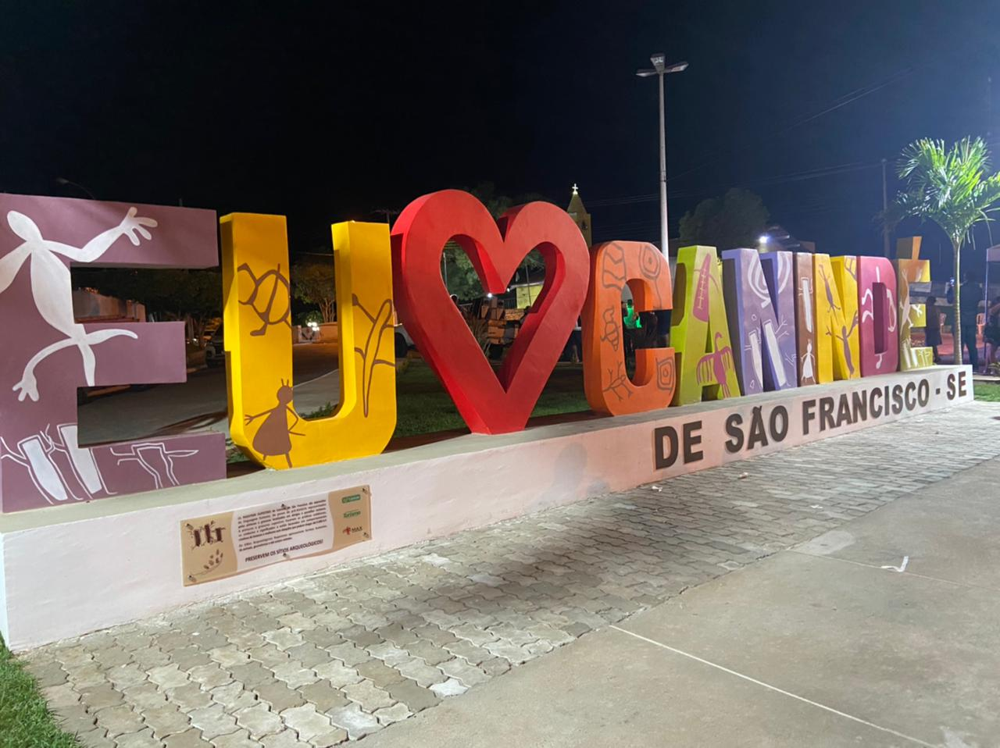

Canindé de São Francisco
História
Canindé de São Francisco é um município brasileiro no extremo noroeste do estado de Sergipe que dista 213km da capital Aracaju e serve de portal de entrada para passeios turísticos nos cânions do rio São Francisco. Sua população, conforme estimativas do IBGE de 2021, era de 30 894 habitantes
O município foi palco de muitas cenas da minissérie Amores Roubados e da novela Cordel Encantado, ambas exibidas na Rede Globo. Mas a localidade tornou-se massivamente conhecida ao servir de cenário e caracterizar ambientação-base do enredo da telenovela Velho Chico,também exibida pela Globo.
Cidade que tem uma prainha famosa, com intuito de atender a crescente demanda turística, no ano de 2016 a localidade passou a contar com a Orla Salomão Porfírio Britto para a comodidade tanto de seus habitantes locais como também para a apreciação da magnífica vista do emblemático Rio São Francisco como presente aos seus visitantes.
A cidade serve como base e possui infraestrutura turística para passeios no chamado Monumento Natural do Rio São Francisco, onde se situam os famosos cânions e conta com visitações guiadas para a Usina Hidrelétrica de Xingó como também é nessa localidade que se situa o chamado MAX- Museu de Arqueologia de Xingó.
fonte: https://pt.wikipedia.org/wiki/Canind%C3%A9_de_S%C3%A3o_Francisco#AcessoPontos Turísticos
Cânion do Xingó
O Cânion do Xingó é a principal atração de quem visita o nosso destino, então conhecê-lo é um passeio obrigatório. Banhado pelo Rio São Francisco, esse imponente monumento é considerado o 5º maior cânion apto à navegação do mundo e possui mais de 60 mil anos. Para conhecê-lo, você pode fazer tanto trilhas ecológicas quanto passeios de barco, que garantem banhos de rio em águas cristalinas.
Dados Gerais de acordo com o IBGE
| Prefeito (a) | Weldo Mariano de Souza |
| Vice-Prefeito (a) | Joselildo Almeida do Nascimento |
| Site do município | https://www.caninde.se.gov.br/ |
| Área territorial | 934,167 km² |
| População estimada | 30.894 pessoas |
| Densidade demográfica | 27,36 hab/km² |
| IDHM | 0,567 |
| PIB per capita | R$ 88.713,54 |